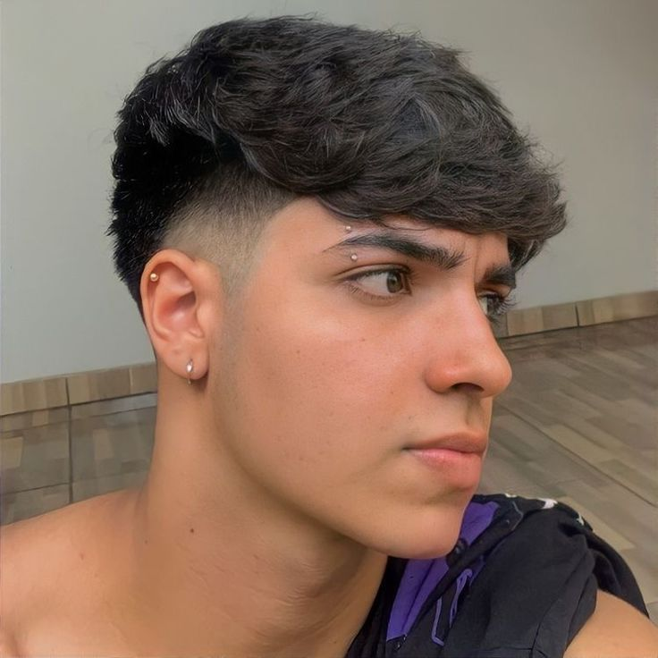
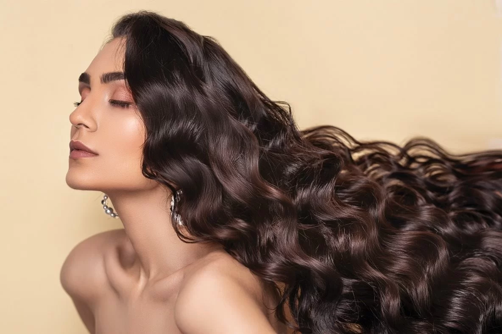
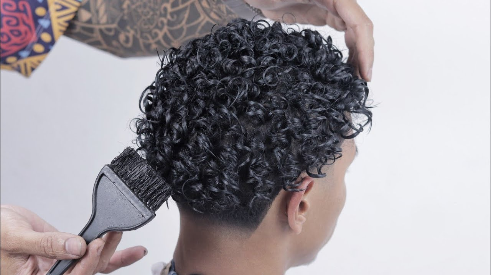
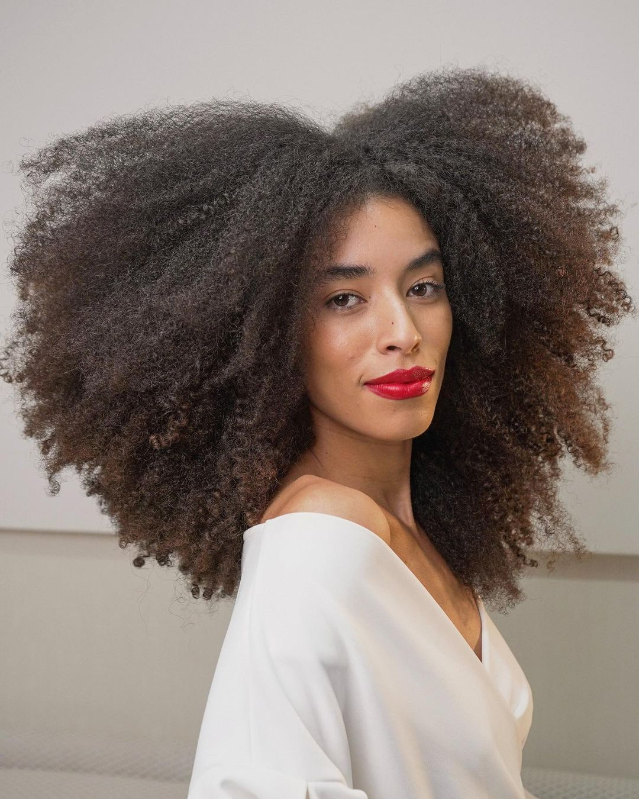
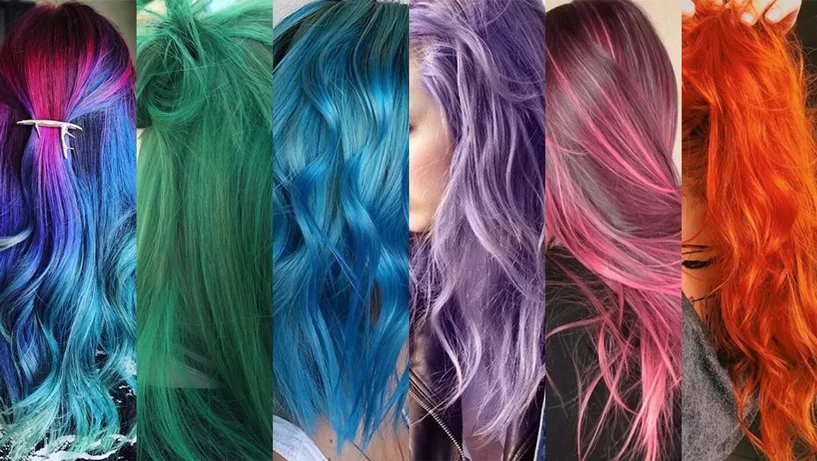

O Que É?
A finalização capilar é uma etapa fundamental nos cuidados com os cabelos,
na qual se aplicam produtos ou técnicas para definir o estilo desejado e manter
a saúde dos fios. É o toque final na rotina de cuidados e pode fazer uma grande
diferença na aparência e no comportamento do cabelo.
Importância da Finalização Capilar:
A importância da finalização capilar reside no fato de que essa etapa
permite que os resultados desejados sejam alcançados, além de proteger e manter
a saúde dos fios. A finalização pode selar a umidade, prevenir o frizz, definir
cachos, adicionar brilho e facilitar o penteado. Além disso, protege o cabelo
dos danos causados pelo calor e pelo ambiente.
Tipos de Finalização para Diferentes Tipos de Cabelo:
1. Finalização para Cabelos Lisos:
- Para cabelos lisos, uma finalização com sérum capilar pode proporcionar
brilho e controle do frizz, deixando os fios com uma aparência mais suave e
saudável.

2. Finalização para Cabelos Ondulados:
- Para cabelos ondulados, produtos como mousses ou sprays de texturização
ajudam a definir as ondas, proporcionando uma aparência natural e texturizada.

3. Finalização para Cabelos Cacheados:
- Para cabelos cacheados, cremes de pentear ou géis de definição são ideais.
Eles ajudam a manter a forma dos cachos, reduzindo o frizz e proporcionando
hidratação.

4. Finalização para Cabelos Crespos:
- Para cabelos crespos, óleos capilares são ótimos para selar a umidade e
proporcionar brilho. Além disso, leave-ins mais densos podem ajudar a definir
os cachos e controlar o volume.

5. Finalização para Cabelos Danificados:
- Para cabelos danificados, produtos de finalização com ingredientes
reparadores, como proteínas e ceramidas, ajudam a fortalecer os fios e a reduzir a
quebra.
6. Finalização para Cabelos Oleosos:
- Para cabelos oleosos, é importante escolher produtos de finalização leves,
evitando produtos muito pesados que possam aumentar a oleosidade.
7. Finalização para Cabelos Finos:
- Para cabelos finos, sprays de volume ou mousse texturizadora podem ser úteis
para dar mais corpo e volume ao cabelo.
8. Finalização para Cabelos Coloridos:
- Para cabelos coloridos, produtos com proteção UV ajudam a prevenir o
desbotamento da cor, enquanto séruns ou óleos protegem os fios contra o calor.

Em resumo, a finalização capilar é uma parte essencial dos cuidados com os cabelos,
adaptada às necessidades e ao tipo de cabelo. A escolha dos produtos e técnicas
adequadas para a finalização pode aprimorar a beleza dos fios, mantendo-os saudáveis
e proporcionando os resultados desejados. É uma etapa que permite que o seu cabelo
alcance o seu melhor potencial.